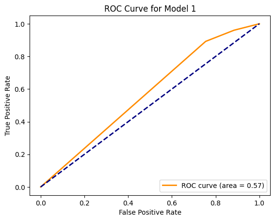
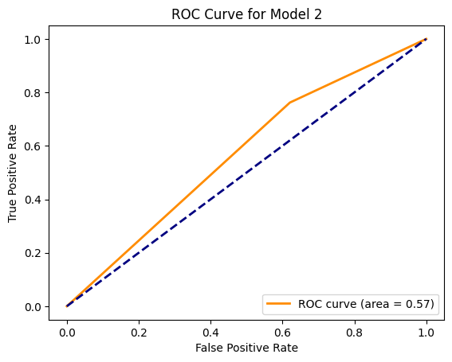
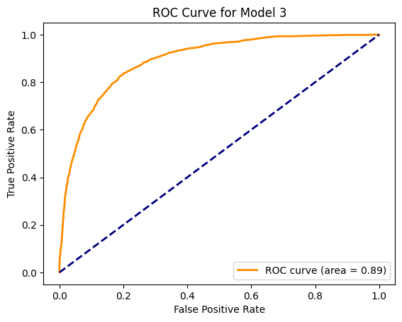
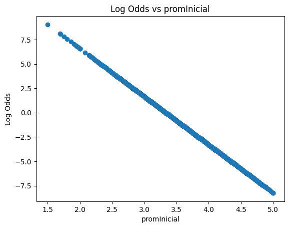
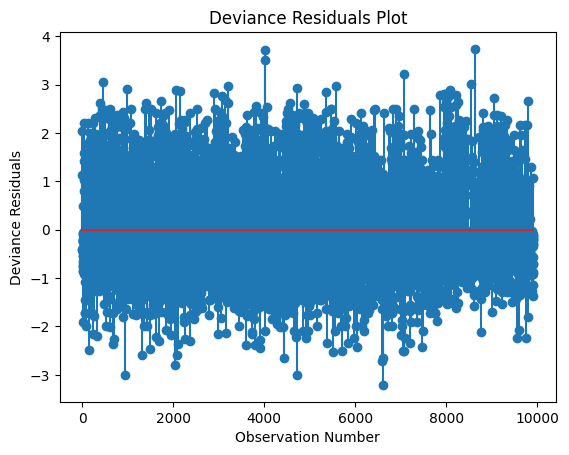
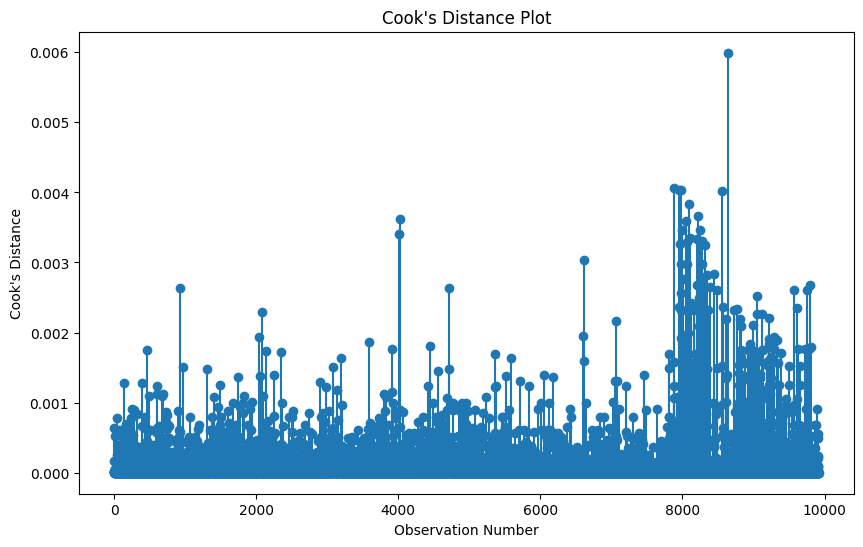
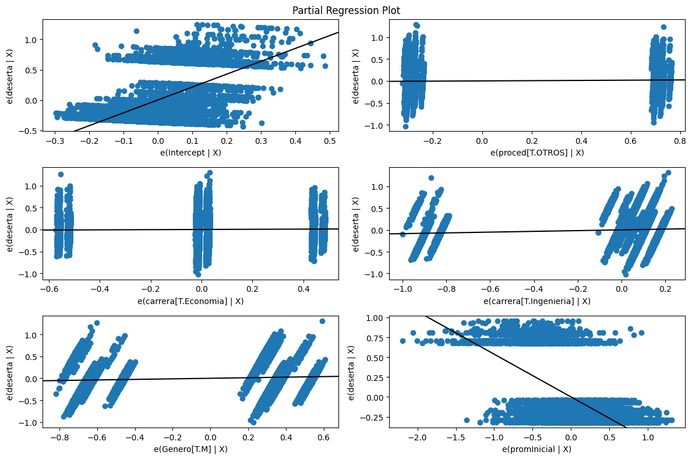

from google.colab import drive
drive.mount('/content/drive')
Mounted at /content/drive
import pandas as pd
import statsmodels.api as sm
import numpy as np
# -----------------------------
# Reading the database
# -----------------------------
file_path = '/content/drive/My Drive/CURSOS LOS ANDES/CURSO MODELOS DE ANÁLISIS ESTADÍSTICO/Modelos de Análisis Estadístico material previo y libro guía/Modelos de Análisis Estadístico/datos_desercion.dta'
data = pd.read_stata(file_path)
data.info()
<class 'pandas.core.frame.DataFrame'>
Int64Index: 9916 entries, 0 to 9915
Data columns (total 5 columns):
# Column Non-Null Count Dtype
--- ------ -------------- -----
0 deserta 9916 non-null int8
1 promInicial 9916 non-null float32
2 proced 9916 non-null object
3 carrera 9916 non-null object
4 Genero 9916 non-null category
dtypes: category(1), float32(1), int8(1), object(2)
memory usage: 290.6+ KB
data['deserta']
0 1
1 0
2 0
3 1
4 0
..
9911 0
9912 0
9913 0
9914 1
9915 0
Name: deserta, Length: 9916, dtype: int8
import statsmodels.formula.api as smf
# -----------------------------
# Variable Declaration
# -----------------------------
# Converting variables to appropriate types
data['deserta'] = data['deserta'].astype('category')
data['promInicial'] = data['promInicial'].astype(float)
data['proced'] = data['proced'].astype('category')
data['carrera'] = data['carrera'].astype('category')
data['Genero'] = data['Genero'].astype('category')
# -----------------------------
# Estimating a logistic regression model
data['deserta'] = data['deserta'].cat.codes
# Now define your formula and fit the model
model_formula = 'deserta ~ promInicial + proced + carrera + Genero'
model = smf.logit(formula=model_formula, data=data).fit()
print(model.summary())# Extracting log-odds for 'promInicial'
Optimization terminated successfully.
Current function value: 0.330042
Iterations 8
Logit Regression Results
==============================================================================
Dep. Variable: deserta No. Observations: 9916
Model: Logit Df Residuals: 9910
Method: MLE Df Model: 5
Date: Fri, 17 Nov 2023 Pseudo R-squ.: 0.3975
Time: 14:48:26 Log-Likelihood: -3272.7
converged: True LL-Null: -5432.2
Covariance Type: nonrobust LLR p-value: 0.000
=========================================================================================
coef std err z P>|z| [0.025 0.975]
-----------------------------------------------------------------------------------------
Intercept 14.9414 0.403 37.042 0.000 14.151 15.732
proced[T.OTROS] 0.2120 0.068 3.116 0.002 0.079 0.345
carrera[T.Economia] 0.4340 0.173 2.515 0.012 0.096 0.772
carrera[T.Ingenieria] 1.0882 0.140 7.776 0.000 0.814 1.362
Genero[T.M] 0.5341 0.069 7.726 0.000 0.399 0.670
promInicial -4.9031 0.111 -44.204 0.000 -5.120 -4.686
=========================================================================================
import pandas as pd
import statsmodels.formula.api as smf
import numpy as np
# Get the coefficient for 'promInicial'
log_odds_promInicial = model.params['promInicial']
# Calculate log-odds, odds, and probability changes for the first two observations
for i in range(2): # Looping through the first two observations
# Select the observation as a DataFrame and reset the index
obs = data.iloc[i:i+1, :].reset_index(drop=True)
# Calculate log-odds for the observation
log_odds = model.predict(obs)[0]
# Calculate odds
odds = np.exp(log_odds)
# Change in odds with one unit increase in 'promInicial'
change_in_odds = odds * log_odds_promInicial
# Probability for the observation
prob = model.predict(obs)[0]
# Change in probability with one unit increase in 'promInicial'
change_in_prob = prob * (1 - prob) * log_odds_promInicial
# Print the results
print(f"Observation {i+1}:")
print(f" Log-Odds: {log_odds}, Odds: {odds}, Change in Odds: {change_in_odds}")
print(f" Probability: {prob}, Change in Probability: {change_in_prob}")
# Odds-ratio
odds_ratio = np.exp(log_odds_promInicial)
# Displaying results
print(f'Odds-ratio for promInicial: {odds_ratio}')
Observation 1:
Log-Odds: 0.5236093274988833, Odds: 1.688109607635245, Change in Odds: -8.276964808230778
Probability: 0.5236093274988833, Change in Probability: -1.223041211115814
Observation 2:
Log-Odds: 0.08650775621096611, Odds: 1.0903598247458117, Change in Odds: -5.34613976302882
Probability: 0.08650775621096611, Change in Probability: -0.3874631269026249
Odds-ratio for promInicial: 0.007423558193487546
# Function to get the mode (most common category) of a column
def getmode(series):
return series.mode()[0]
# Calculate the average case for marginal effects
x_prom = pd.DataFrame({
'promInicial': [data['promInicial'].mean()],
'proced': [getmode(data['proced'])],
'carrera': [getmode(data['carrera'])],
'Genero': [getmode(data['Genero'])]
})
# Marginal effects for the average case
avg_case_margeff = model.get_margeff(at='mean', atexog=x_prom).summary_frame()
print("Marginal Effects for the Average Case:")
print(avg_case_margeff)
# Calculate the marginal effects across all data
marg_eff = model.get_margeff().summary_frame()
print("\nAverage Marginal Effects:")
print(marg_eff)
# Calculate and display the average marginal effect of 'promInicial'
avg_marginal_effect_promInicial = marg_eff.loc['promInicial', 'dy/dx']
print(f"\nAverage Marginal Effect of 'promInicial': {avg_marginal_effect_promInicial}")
Marginal Effects for the Average Case:
dy/dx Std. Err. z Pr(>|z|) \
proced[T.OTROS] 0.021178 0.006806 3.111569 1.860958e-03
carrera[T.Economia] 0.043364 0.017190 2.522608 1.164883e-02
carrera[T.Ingenieria] 0.108729 0.013800 7.878730 3.307252e-15
Genero[T.M] 0.053363 0.006944 7.684774 1.532674e-14
promInicial -0.489917 0.012249 -39.995746 0.000000e+00
Conf. Int. Low Cont. Int. Hi.
proced[T.OTROS] 0.007838 0.034518
carrera[T.Economia] 0.009672 0.077056
carrera[T.Ingenieria] 0.081681 0.135777
Genero[T.M] 0.039753 0.066972
promInicial -0.513925 -0.465909
Average Marginal Effects:
dy/dx Std. Err. z Pr(>|z|) \
proced[T.OTROS] 0.021960 0.007035 3.121384 1.800032e-03
carrera[T.Economia] 0.044965 0.017862 2.517321 1.182512e-02
carrera[T.Ingenieria] 0.112744 0.014350 7.856729 3.942959e-15
Genero[T.M] 0.055333 0.007078 7.817610 5.383558e-15
promInicial -0.508006 0.005892 -86.214906 0.000000e+00
Conf. Int. Low Cont. Int. Hi.
proced[T.OTROS] 0.008171 0.035749
carrera[T.Economia] 0.009956 0.079975
carrera[T.Ingenieria] 0.084618 0.140869
Genero[T.M] 0.041460 0.069205
promInicial -0.519555 -0.496458
Average Marginal Effect of 'promInicial': -0.5080063289783272
import pandas as pd
import statsmodels.formula.api as smf
import numpy as np
# Fitting a logistic regression model with an interaction term
model_inter_formula = 'deserta ~ promInicial + proced + carrera + Genero + promInicial:Genero'
model_inter = smf.logit(formula=model_inter_formula, data=data).fit()
print(model_inter.summary())
# Calculating odds ratios for specific observations
# For the interaction, we'll calculate it for different levels of 'Genero'
# Replace 'Genero1' with the actual name of your dummy variable for 'Genero'
# Odds-ratio for observation with 'Genero' at its baseline level
odds_ratio_women = np.exp(model_inter.params['promInicial']) * \
np.exp(model_inter.params.get('promInicial:Genero[T.YourCategory]', 0) * 0)
print(f"Odds-ratio for women (baseline level of Genero): {odds_ratio_women}")
# Odds-ratio for observation with 'Genero' at its other level
# This assumes 'Genero' is binary; adjust as needed for your data
odds_ratio_men = np.exp(model_inter.params['promInicial']) * \
np.exp(model_inter.params.get('promInicial:Genero[T.YourCategory]', 0) * 1)
print(f"Odds-ratio for men (other level of Genero): {odds_ratio_men}")
Optimization terminated successfully.
Current function value: 0.329492
Iterations 8
Logit Regression Results
==============================================================================
Dep. Variable: deserta No. Observations: 9916
Model: Logit Df Residuals: 9909
Method: MLE Df Model: 6
Date: Fri, 17 Nov 2023 Pseudo R-squ.: 0.3985
Time: 14:48:27 Log-Likelihood: -3267.2
converged: True LL-Null: -5432.2
Covariance Type: nonrobust LLR p-value: 0.000
===========================================================================================
coef std err z P>|z| [0.025 0.975]
-------------------------------------------------------------------------------------------
Intercept 17.1323 0.810 21.148 0.000 15.545 18.720
proced[T.OTROS] 0.2140 0.068 3.147 0.002 0.081 0.347
carrera[T.Economia] 0.4332 0.173 2.504 0.012 0.094 0.772
carrera[T.Ingenieria] 1.0838 0.141 7.708 0.000 0.808 1.359
Genero[T.M] -2.4073 0.915 -2.631 0.009 -4.201 -0.614
promInicial -5.5359 0.232 -23.869 0.000 -5.990 -5.081
promInicial:Genero[T.M] 0.8489 0.264 3.220 0.001 0.332 1.366
===========================================================================================
Odds-ratio for women (baseline level of Genero): 0.00394258673102075
Odds-ratio for men (other level of Genero): 0.00394258673102075
import pandas as pd
import statsmodels.formula.api as smf
import numpy as np
# Assuming 'data' is already defined
# Fitting a reduced logistic regression model
model_reduced_formula = 'deserta ~ Genero + carrera + promInicial'
model_reduced = smf.logit(formula=model_reduced_formula, data=data).fit()
print(model_reduced.summary())
# Calculating Odds-Ratios with Confidence Intervals
params_reduced = model_reduced.params
conf_reduced = model_reduced.conf_int()
conf_reduced['OR'] = params_reduced
conf_reduced.columns = ['2.5%', '97.5%', 'OR']
odds_ratios_reduced = np.exp(conf_reduced)
print("\nOdds Ratios with Confidence Intervals (Reduced Model):")
print(odds_ratios_reduced)
Optimization terminated successfully.
Current function value: 0.330529
Iterations 8
Logit Regression Results
==============================================================================
Dep. Variable: deserta No. Observations: 9916
Model: Logit Df Residuals: 9911
Method: MLE Df Model: 4
Date: Fri, 17 Nov 2023 Pseudo R-squ.: 0.3966
Time: 14:48:27 Log-Likelihood: -3277.5
converged: True LL-Null: -5432.2
Covariance Type: nonrobust LLR p-value: 0.000
=========================================================================================
coef std err z P>|z| [0.025 0.975]
-----------------------------------------------------------------------------------------
Intercept 14.9868 0.403 37.193 0.000 14.197 15.777
Genero[T.M] 0.5425 0.069 7.856 0.000 0.407 0.678
carrera[T.Economia] 0.4431 0.172 2.572 0.010 0.105 0.781
carrera[T.Ingenieria] 1.0895 0.140 7.803 0.000 0.816 1.363
promInicial -4.9003 0.111 -44.231 0.000 -5.117 -4.683
=========================================================================================
Odds Ratios with Confidence Intervals (Reduced Model):
2.5% 97.5% OR
Intercept 1.464487e+06 7.106678e+06 3.226087e+06
Genero[T.M] 1.502485e+00 1.969526e+00 1.720228e+00
carrera[T.Economia] 1.111135e+00 2.183222e+00 1.557516e+00
carrera[T.Ingenieria] 2.261099e+00 3.908660e+00 2.972855e+00
promInicial 5.991253e-03 9.249655e-03 7.444261e-03
import numpy as np
import statsmodels.api as sm
# -----------------------------
# Model Fit Measures
# -----------------------------
# Log-likelihood of the model
log_likelihood = model.llf
print(f'Log-Likelihood: {log_likelihood}')
# Global significance test (Likelihood Ratio Test) for the full model
lr_test_full = model.llr_pvalue
print(f'Likelihood Ratio Test p-value (Full Model): {lr_test_full}')
# For individual significance tests, we can use the summary
print("\nIndividual Coefficient Significance:")
print(model.summary())
# Confidence intervals for coefficients
conf_int = model.conf_int()
print("\nConfidence Intervals for Coefficients:")
print(conf_int)
# Calculating Odds-Ratios with Confidence Intervals
params = model.params
conf = model.conf_int()
conf['OR'] = params
conf.columns = ['2.5%', '97.5%', 'OR']
odds_ratios = np.exp(conf)
print("\nOdds Ratios with Confidence Intervals:")
print(odds_ratios)
# For reduced model (if applicable)
# Replace 'model_reduced' with your reduced model
if 'model_reduced' in locals():
conf_int_reduced = model_reduced.conf_int()
params_reduced = model_reduced.params
conf_int_reduced['OR'] = params_reduced
conf_int_reduced.columns = ['2.5%', '97.5%', 'OR']
odds_ratios_reduced = np.exp(conf_int_reduced)
print("\nOdds Ratios with Confidence Intervals (Reduced Model):")
print(odds_ratios_reduced)
# Hypothesis testing for reduced model (if applicable)
# Replace hypothesis with your specific hypothesis
# Example: hypothesis = 'carreraEconomia = carreraIngenieria'
# hypothesis_test = model_reduced.wald_test(hypothesis)
# print(f"\nHypothesis Test Result (Reduced Model): {hypothesis_test}")
# Note: In Python, Wald tests are typically used for hypothesis testing on coefficients.
Log-Likelihood: -3272.6948128874023
Likelihood Ratio Test p-value (Full Model): 0.0
Individual Coefficient Significance:
Logit Regression Results
==============================================================================
Dep. Variable: deserta No. Observations: 9916
Model: Logit Df Residuals: 9910
Method: MLE Df Model: 5
Date: Fri, 17 Nov 2023 Pseudo R-squ.: 0.3975
Time: 14:48:27 Log-Likelihood: -3272.7
converged: True LL-Null: -5432.2
Covariance Type: nonrobust LLR p-value: 0.000
=========================================================================================
coef std err z P>|z| [0.025 0.975]
-----------------------------------------------------------------------------------------
Intercept 14.9414 0.403 37.042 0.000 14.151 15.732
proced[T.OTROS] 0.2120 0.068 3.116 0.002 0.079 0.345
carrera[T.Economia] 0.4340 0.173 2.515 0.012 0.096 0.772
carrera[T.Ingenieria] 1.0882 0.140 7.776 0.000 0.814 1.362
Genero[T.M] 0.5341 0.069 7.726 0.000 0.399 0.670
promInicial -4.9031 0.111 -44.204 0.000 -5.120 -4.686
=========================================================================================
Confidence Intervals for Coefficients:
0 1
Intercept 14.150835 15.731985
proced[T.OTROS] 0.078619 0.345283
carrera[T.Economia] 0.095759 0.772220
carrera[T.Ingenieria] 0.813898 1.362426
Genero[T.M] 0.398570 0.669537
promInicial -5.120495 -4.685699
Odds Ratios with Confidence Intervals:
2.5% 97.5% OR
Intercept 1.398395e+06 6.796950e+06 3.082989e+06
proced[T.OTROS] 1.081792e+00 1.412390e+00 1.236088e+00
carrera[T.Economia] 1.100494e+00 2.164565e+00 1.543403e+00
carrera[T.Ingenieria] 2.256687e+00 3.905658e+00 2.968813e+00
Genero[T.M] 1.489692e+00 1.953332e+00 1.705832e+00
promInicial 5.973066e-03 9.226285e-03 7.423558e-03
Odds Ratios with Confidence Intervals (Reduced Model):
2.5% 97.5% OR
Intercept 1.464487e+06 7.106678e+06 3.226087e+06
Genero[T.M] 1.502485e+00 1.969526e+00 1.720228e+00
carrera[T.Economia] 1.111135e+00 2.183222e+00 1.557516e+00
carrera[T.Ingenieria] 2.261099e+00 3.908660e+00 2.972855e+00
promInicial 5.991253e-03 9.249655e-03 7.444261e-03
import scipy.stats
# Comparación entre modelos
# Fitting the complete model with interaction terms
model_complete_formula = 'deserta ~ Genero * carrera * promInicial'
model_complete = smf.logit(formula=model_complete_formula, data=data).fit()
print(model_complete.summary())
# Fitting the reduced model without interaction terms
model_reduced_formula = 'deserta ~ Genero + carrera + promInicial'
model_reduced = smf.logit(formula=model_reduced_formula, data=data).fit()
print(model_reduced.summary())
# Comparing the two models using a likelihood ratio test
lr_stat = 2 * (model_complete.llf - model_reduced.llf) # LR statistic
df = model_complete.df_model - model_reduced.df_model # Degrees of freedom
p_value = scipy.stats.chi2.sf(lr_stat, df) # P-value
# Calculating McFadden's Pseudo R-squared
def pseudo_r2(model):
llf = model.llf
llnull = model.llnull
return 1 - (llf / llnull)
pseudo_r2_complete = pseudo_r2(model_complete)
pseudo_r2_reduced = pseudo_r2(model_reduced)
print(f"\nMcFadden's Pseudo R-squared (Complete Model): {pseudo_r2_complete}")
print(f"McFadden's Pseudo R-squared (Reduced Model): {pseudo_r2_reduced}")
Optimization terminated successfully.
Current function value: 0.329624
Iterations 9
Logit Regression Results
==============================================================================
Dep. Variable: deserta No. Observations: 9916
Model: Logit Df Residuals: 9904
Method: MLE Df Model: 11
Date: Fri, 17 Nov 2023 Pseudo R-squ.: 0.3983
Time: 14:48:27 Log-Likelihood: -3268.6
converged: True LL-Null: -5432.2
Covariance Type: nonrobust LLR p-value: 0.000
=================================================================================================================
coef std err z P>|z| [0.025 0.975]
-----------------------------------------------------------------------------------------------------------------
Intercept 14.0824 2.263 6.224 0.000 9.648 18.517
Genero[T.M] -1.7976 2.838 -0.633 0.526 -7.360 3.765
carrera[T.Economia] 7.2213 3.963 1.822 0.068 -0.545 14.988
carrera[T.Ingenieria] 4.2540 2.431 1.750 0.080 -0.511 9.019
Genero[T.M]:carrera[T.Economia] -2.4711 4.597 -0.538 0.591 -11.480 6.538
Genero[T.M]:carrera[T.Ingenieria] -0.6802 3.012 -0.226 0.821 -6.583 5.223
promInicial -4.6198 0.652 -7.086 0.000 -5.898 -3.342
Genero[T.M]:promInicial 0.6582 0.820 0.803 0.422 -0.948 2.265
carrera[T.Economia]:promInicial -2.0333 1.156 -1.759 0.079 -4.299 0.233
carrera[T.Ingenieria]:promInicial -0.9316 0.701 -1.330 0.184 -2.305 0.442
Genero[T.M]:carrera[T.Economia]:promInicial 0.8010 1.338 0.599 0.549 -1.821 3.423
Genero[T.M]:carrera[T.Ingenieria]:promInicial 0.2097 0.870 0.241 0.809 -1.495 1.914
=================================================================================================================
Optimization terminated successfully.
Current function value: 0.330529
Iterations 8
Logit Regression Results
==============================================================================
Dep. Variable: deserta No. Observations: 9916
Model: Logit Df Residuals: 9911
Method: MLE Df Model: 4
Date: Fri, 17 Nov 2023 Pseudo R-squ.: 0.3966
Time: 14:48:27 Log-Likelihood: -3277.5
converged: True LL-Null: -5432.2
Covariance Type: nonrobust LLR p-value: 0.000
=========================================================================================
coef std err z P>|z| [0.025 0.975]
-----------------------------------------------------------------------------------------
Intercept 14.9868 0.403 37.193 0.000 14.197 15.777
Genero[T.M] 0.5425 0.069 7.856 0.000 0.407 0.678
carrera[T.Economia] 0.4431 0.172 2.572 0.010 0.105 0.781
carrera[T.Ingenieria] 1.0895 0.140 7.803 0.000 0.816 1.363
promInicial -4.9003 0.111 -44.231 0.000 -5.117 -4.683
=========================================================================================
McFadden's Pseudo R-squared (Complete Model): 0.3983002980760678
McFadden's Pseudo R-squared (Reduced Model): 0.39664930707680546
## Comparemos algunos modelos que pueden construirse con estos datos
# Define and fit the models
model1 = smf.logit('deserta ~ carrera', data=data).fit()
print(model1.summary())
lr_stat1 = model1.llr # Likelihood Ratio Statistic
p_value1 = scipy.stats.chi2.sf(lr_stat1, df=model1.df_model)
print(f"Likelihood Ratio Test (Model 1): LR Statistic = {lr_stat1}, p-value = {p_value1}")
model2 = smf.logit('deserta ~ Genero', data=data).fit()
print(model2.summary())
lr_stat2 = model2.llr
p_value2 = scipy.stats.chi2.sf(lr_stat2, df=model2.df_model)
print(f"Likelihood Ratio Test (Model 2): LR Statistic = {lr_stat2}, p-value = {p_value2}")
model3 = smf.logit('deserta ~ promInicial', data=data).fit()
print(model3.summary())
lr_stat3 = model3.llr
p_value3 = scipy.stats.chi2.sf(lr_stat3, df=model3.df_model)
print(f"Likelihood Ratio Test (Model 3): LR Statistic = {lr_stat3}, p-value = {p_value3}")
# Compare models using AIC and BIC
aic_values = [model1.aic, model2.aic, model3.aic]
bic_values = [model1.bic, model2.bic, model3.bic]
print(f"\nAIC Values: {aic_values}")
print(f"BIC Values: {bic_values}")
# Determine the best model based on AIC and BIC
best_model_aic = min(aic_values)
best_model_bic = min(bic_values)
print(f"Best model based on AIC: {'Model 1' if best_model_aic == aic_values[0] else 'Model 2' if best_model_aic == aic_values[1] else 'Model 3'}")
print(f"Best model based on BIC: {'Model 1' if best_model_bic == bic_values[0] else 'Model 2' if best_model_bic == bic_values[1] else 'Model 3'}")
Optimization terminated successfully.
Current function value: 0.535897
Iterations 6
Logit Regression Results
==============================================================================
Dep. Variable: deserta No. Observations: 9916
Model: Logit Df Residuals: 9913
Method: MLE Df Model: 2
Date: Fri, 17 Nov 2023 Pseudo R-squ.: 0.02177
Time: 14:48:27 Log-Likelihood: -5314.0
converged: True LL-Null: -5432.2
Covariance Type: nonrobust LLR p-value: 4.414e-52
=========================================================================================
coef std err z P>|z| [0.025 0.975]
-----------------------------------------------------------------------------------------
Intercept -2.2405 0.109 -20.541 0.000 -2.454 -2.027
carrera[T.Economia] 0.4313 0.138 3.119 0.002 0.160 0.702
carrera[T.Ingenieria] 1.2398 0.112 11.067 0.000 1.020 1.459
=========================================================================================
Likelihood Ratio Test (Model 1): LR Statistic = 236.4991774169448, p-value = 4.4142419793909565e-52
Optimization terminated successfully.
Current function value: 0.539475
Iterations 6
Logit Regression Results
==============================================================================
Dep. Variable: deserta No. Observations: 9916
Model: Logit Df Residuals: 9914
Method: MLE Df Model: 1
Date: Fri, 17 Nov 2023 Pseudo R-squ.: 0.01524
Time: 14:48:27 Log-Likelihood: -5349.4
converged: True LL-Null: -5432.2
Covariance Type: nonrobust LLR p-value: 6.983e-38
===============================================================================
coef std err z P>|z| [0.025 0.975]
-------------------------------------------------------------------------------
Intercept -1.6341 0.046 -35.373 0.000 -1.725 -1.544
Genero[T.M] 0.6712 0.054 12.452 0.000 0.566 0.777
===============================================================================
Likelihood Ratio Test (Model 2): LR Statistic = 165.5367021491329, p-value = 6.983444718781584e-38
Optimization terminated successfully.
Current function value: 0.339156
Iterations 7
Logit Regression Results
==============================================================================
Dep. Variable: deserta No. Observations: 9916
Model: Logit Df Residuals: 9914
Method: MLE Df Model: 1
Date: Fri, 17 Nov 2023 Pseudo R-squ.: 0.3809
Time: 14:48:28 Log-Likelihood: -3363.1
converged: True LL-Null: -5432.2
Covariance Type: nonrobust LLR p-value: 0.000
===============================================================================
coef std err z P>|z| [0.025 0.975]
-------------------------------------------------------------------------------
Intercept 16.4594 0.382 43.071 0.000 15.710 17.208
promInicial -4.9403 0.110 -45.110 0.000 -5.155 -4.726
===============================================================================
Likelihood Ratio Test (Model 3): LR Statistic = 4138.2641306558835, p-value = 0.0
AIC Values: [10633.907084473914, 10702.869559741726, 6730.142131234976]
BIC Values: [10655.51279915338, 10717.273369528037, 6744.545941021286]
Best model based on AIC: Model 3
Best model based on BIC: Model 3
from sklearn.metrics import confusion_matrix, roc_curve, auc
import matplotlib.pyplot as plt
# Function to plot ROC curve
def plot_roc_curve(model, data, title):
# Get actual and predicted values
actual = data['deserta']
predicted_prob = model.predict(data)
# Calculate ROC curve and AUC
fpr, tpr, _ = roc_curve(actual, predicted_prob)
roc_auc = auc(fpr, tpr)
# Plot
plt.figure()
plt.plot(fpr, tpr, color='darkorange', lw=2, label=f'ROC curve (area = {roc_auc:.2f})')
plt.plot([0, 1], [0, 1], color='navy', lw=2, linestyle='--')
plt.xlabel('False Positive Rate')
plt.ylabel('True Positive Rate')
plt.title(f'ROC Curve for {title}')
plt.legend(loc='lower right')
plt.show()
return roc_auc
# Evaluate models
models = [model1, model2, model3]
model_names = ['Model 1', 'Model 2', 'Model 3']
for i, model in enumerate(models):
# Confusion Matrix
predictions = (model.predict(data) >= 0.1).astype(int)
cm = confusion_matrix(data['deserta'], predictions)
print(f'Confusion Matrix for {model_names[i]}:\n{cm}\n')
# Plot ROC curve and calculate AUC
auc_value = plot_roc_curve(model, data, model_names[i])
print(f'AUC for {model_names[i]}: {auc_value}\n')
Confusion Matrix for Model 1:
[[ 874 6690]
[ 93 2259]]

AUC for Model 1: 0.5701413415048727
Confusion Matrix for Model 2:
[[ 0 7564]
[ 0 2352]]

AUC for Model 2: 0.5706668177583037
Confusion Matrix for Model 3:
[[4635 2929]
[ 148 2204]]

AUC for Model 3: 0.8935545926461541
from sklearn.metrics import roc_curve, precision_recall_curve, f1_score
# Function to find the optimal threshold for the highest F1 score
def find_optimal_threshold(model, data):
actual = data['deserta']
predicted_prob = model.predict(data)
# Calculate ROC curve components
fpr, tpr, thresholds_roc = roc_curve(actual, predicted_prob)
sensitivity = tpr
specificity = 1 - fpr
# Calculate Precision-Recall curve components
precision, recall, thresholds_pr = precision_recall_curve(actual, predicted_prob)
# Calculate F1 score for each threshold
f1_scores = [f1_score(actual, predicted_prob >= t) for t in thresholds_pr]
# Find the optimal threshold
optimal_idx = np.argmax(f1_scores)
optimal_threshold = thresholds_pr[optimal_idx]
optimal_f1 = f1_scores[optimal_idx]
return optimal_threshold, sensitivity[optimal_idx], specificity[optimal_idx], precision[optimal_idx], optimal_f1
# Evaluate models
models = [model1, model2, model3]
model_names = ['Model 1', 'Model 2', 'Model 3']
for i, model in enumerate(models):
optimal_threshold, sensitivity, specificity, precision, optimal_f1 = find_optimal_threshold(model, data)
print(f"{model_names[i]}:")
print(f" Optimal Threshold: {optimal_threshold}")
print(f" Sensitivity: {sensitivity}")
print(f" Specificity: {specificity}")
print(f" Precision: {precision}")
print(f" Optimal F1 Score: {optimal_f1}\n")
Model 1:
Optimal Threshold: 0.26880204996796747
Sensitivity: 0.9604591836734694
Specificity: 0.11554732945531465
Precision: 0.26880204996796925
Optimal F1 Score: 0.41311410849660335
Model 2:
Optimal Threshold: 0.27628738822078297
Sensitivity: 0.7619047619047619
Specificity: 0.37942887361184563
Precision: 0.27628738822078325
Optimal F1 Score: 0.4055216112242589
Model 3:
Optimal Threshold: 0.34662302675444334
Sensitivity: 0.9370748299319728
Specificity: 0.6127710206240085
Precision: 0.6496960486322189
Optimal F1 Score: 0.6861958266452649
from sklearn.metrics import confusion_matrix
# Function to create a confusion matrix at a given threshold
def create_confusion_matrix(model, data, threshold):
actual = data['deserta']
predicted_prob = model.predict(data)
predicted = (predicted_prob >= threshold).astype(int)
cm = confusion_matrix(actual, predicted)
return cm
# Optimal thresholds from the previous step
optimal_thresholds = [0.2047682, 0.2197763, 0.2311404]
# Evaluate models
models = [model1, model2, model3]
model_names = ['Model 1', 'Model 2', 'Model 3']
for i, model in enumerate(models):
cm = create_confusion_matrix(model, data, optimal_thresholds[i])
print(f'Confusion Matrix for {model_names[i]} (Threshold: {optimal_thresholds[i]}):')
print(cm)
print()
Confusion Matrix for Model 1 (Threshold: 0.2047682):
[[1857 5707]
[ 254 2098]]
Confusion Matrix for Model 2 (Threshold: 0.2197763):
[[2870 4694]
[ 560 1792]]
Confusion Matrix for Model 3 (Threshold: 0.2311404):
[[6049 1515]
[ 385 1967]]
# Use a scatter plot of the predicted log odds against the continuous predictors
for variable in ['promInicial']: # Replace with your continuous predictors
fitted_vals = model.predict()
log_odds = np.log(fitted_vals / (1 - fitted_vals))
plt.scatter(data[variable], log_odds)
plt.xlabel(variable)
plt.ylabel('Log Odds')
plt.title(f'Log Odds vs {variable}')
plt.show()

# Fit the model using GLM
glm_formula = 'deserta ~ promInicial + proced + carrera + Genero'
glm_model = sm.GLM.from_formula(glm_formula, data=data, family=sm.families.Binomial()).fit()
# Deviance residuals
deviance_residuals = glm_model.resid_deviance
# Plot the deviance residuals
plt.stem(np.arange(len(deviance_residuals)), deviance_residuals, use_line_collection=True)
plt.xlabel('Observation Number')
plt.ylabel('Deviance Residuals')
plt.title('Deviance Residuals Plot')
plt.show()
<ipython-input-27-3a04b9faf8e9>:9: MatplotlibDeprecationWarning: The 'use_line_collection' parameter of stem() was deprecated in Matplotlib 3.6 and will be removed two minor releases later. If any parameter follows 'use_line_collection', they should be passed as keyword, not positionally.
plt.stem(np.arange(len(deviance_residuals)), deviance_residuals, use_line_collection=True)

# Cook's Distance
influence = glm_model.get_influence()
cooks = influence.cooks_distance[0]
# Plot Cook's distance
plt.figure(figsize=(10, 6))
plt.stem(np.arange(len(cooks)), cooks, linefmt='-', markerfmt='o', basefmt=' ')
plt.xlabel('Observation Number')
plt.ylabel("Cook's Distance")
plt.title("Cook's Distance Plot")
plt.show()

# Checking for linearity in the logit can be done by inspecting the partial regression plots
fig = plt.figure(figsize=(12, 8))
sm.graphics.plot_partregress_grid(glm_model, fig=fig)
plt.show()

# Calculate predicted log odds (logit transformation of predicted probabilities)
predicted_probs = model.predict(data)
log_odds = np.log(predicted_probs / (1 - predicted_probs))
# Plot the continuous independent variable against the log odds
plt.scatter(data['promInicial'], log_odds)
plt.xlabel('promInicial')
plt.ylabel('Log Odds')
plt.title('Log Odds vs promInicial')
plt.show()